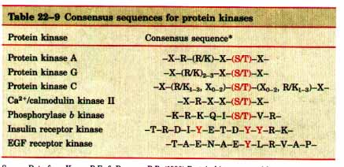
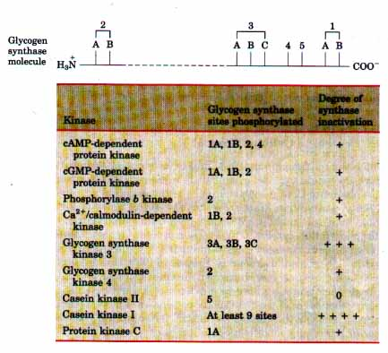
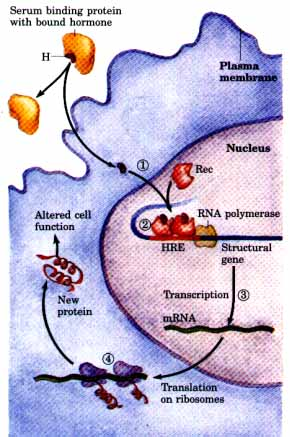
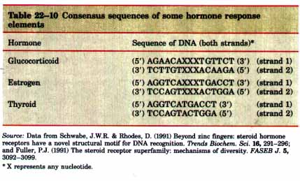
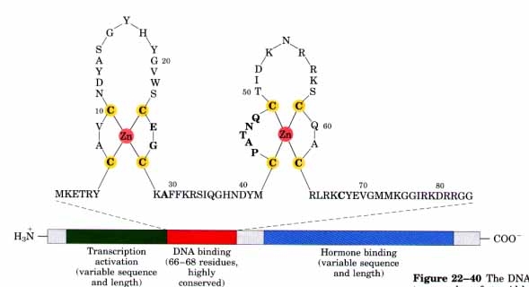
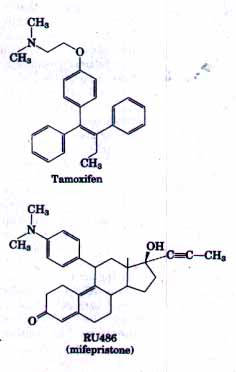

Protein Phosphorylation and Dephosphorylation Are Central to
Cellular Control
One common denominator in signal transductions-whether they
involve adenylate cyclase, a transmembrane receptor-tyrosine
kinase, phospholipase C, or an ion channel-is the eventual
regulation of the activity of a protein kinase. We have seen
examples of kinases activated by cAMP, insulin, Ca2+/calmodulin,
Ca2+/diacylglycerol, and by phosphorylation catalyzed by another
protein kinase. The number of known protein kinases has grown
remarkably since their discovery by Edwin G. Krebs and Edmond H.
Fischer in 1959. Hundreds of different protein kinases, each with
its own specific activator and its own specific protein
target(s), may be present in eukaryotic cells. Although many
other types of covalent modifications are known to occur on
proteins, it is clear that phosphorylations make up the vast
majority of known regulatory modifications of proteins.
The addition of a phosphate group to a Ser, Thr, or Tyr residue
introduces a bulky, highly charged group into a region that was
only moderately polar. When the modified side chain is located in
a region of the protein critical to its three-dimensional
structure, phosphorylation can be expected to have dramatic
effects on protein conformation and thus on the catalytic
activity of the protein. As a result of evolution, the
kinase-phosphorylated Ser, Thr, and/or Tyr residues of regulated
proteins occur within common structural motifs (consensus
sequences) that are recognized by their specific protein kinases
(Table 22-9).

Source: Data from Kemp, B.E. & Pearson,
R.B. (1990) Protein kinase recognition sequence motifs. ~ends
Biochem. Sci. 15, 342-346; and Kennelly, P.J. & Krebs, E.G.
(1991) Consensus sequences as substrate specificity determinants
for protein kinases and protein phosphatases.
J. Biol. Chem. 266, 15555-15558.
* (S/T) and Y are the Ser (or Thr) and Tyr residues that are phosphorylated. X is a less essential residue; any of several amino acids may be at this position. Essential residues are indicated by their one-letter abbreviations (see Table 5-1). The notation -(R/Kl-3, X0-2)- means that at this position there are from one to three amino acids, which can be R (Arg) or K (Lys), as well as zero to two of any amino acids, in any sequence (the comma indicates that no sequence is implied).
 |
Figure 22-38 The enzyme glycogen synthase contains at least nine separate sites in five designated regions susceptible to phosphorylation by one of the cellular protein kinases. The activity of this enzyme is therefore capable of modulation in response to a variety of second messengers produced in response to different extracellular signals. Thus regulation is matter not of binary (on/off) switching but of finely tuned modulation of the activity over a wide range. |
Not all cases of regulation by phosphorylation are as simple as those we have described. Some proteins have consensus sequences recognized by several different protein kinases, each of which can phosphorylate the protein and alter its enzymatic activity. For example, glycogen synthase is inactivated by cAMP-dependent phosphorylation of specific Ser residues, and is also modulated by at least four other protein kinases that phosphorylate four other sites in the protein (Fig. 22-38). Some of the phosphorylations inhibit the enzyme more than others, and some combinations of phosphorylation are cumulative. The result of all of these regulations is the potential for extremely subtle modulation of the activity of glycogen synthase, allowing very finely tuned responses to varying metabolic circumstances.
The end effect of epinephrine's interaction with the
β-adrenergic receptor is the phosphorylation of several cellular
enzymes, including glycogen synthase and glycogen phosphorylase.
To serve as an effective regulatory mechanism, this
phosphorylation must be reversible, allowing the regulated
enzymes to return to their prestimulus level when the hormonal
signal stops. In muscle, for example, the enzyme phosphoprotein
phosphatase-1 dephosphorylates glycogen phosphorylase,
phosphorylase b kinase, and glycogen synthase (see Figs. 14-17,
1915), reversing the effects of cAMP on the activities of these
enzymes. This enzyme (sometimes called phosphorylase a
phosphatase, synthase phosphatase, or kinase phosphatase to
indicate its substrate specificity) is regulated by another
protein, phosphoprotein phosphatase inhibitor. This inhibitor,
when phosphorylated by protein kinase A, inhibits phosphoprotein
phosphatase-1. A rise in the concentration of cAMP therefore
stimulates phosphorylation of certain regulated proteins such as
glycogen phosphorylase and also slows dephosphorylation of these
proteins, prolonging the effect of phosphorylation.
Cells contain a family of phosphoprotein phosphatases that
hydrolyze specific phosphoserine, phosphothreonine, and
phosphotyrosine esters, releasing Pi. Although this class of
enzymes is not yet as thoroughly studied as the protein kinases,
it is very likely that these phosphatases will turn out to be
just as important as the protein kinases in regulating cellular
processes and metabolism. The known phosphoprotein phosphatases
show substrate specificity, acting on only a subset of
phosphoproteins, and they are in some cases regulated by a second
messenger or an extracellular signal. Some protein phosphatases
are transmembrane proteins of the plasma membrane, with
extracellular receptorlike domains and intracellular phosphatase
domains; they may well prove to be regulated by extracellular
signals in a fashion similar to regulation of the tyrosine kinase
of the insulin receptor. The complexity and the subtlety of the
regulatory mechanisms achieved by evolution strain the
imagination, and the experimental challenges of discovering the
full range of regulatory mechanisms remain to be met.
| The mechanism by which steroid and
thyroid hormones exert their effects is fundamentally
different from that for the other types of hormones.
Steroid hormones (estrogen, progesterone, and cortisol,
for example), too hydrophobic to dissolve readily in the
blood, are carried on specific carrier proteins from the
point of their release to their target tissues. In the
target tissue, these hormones pass through the plasma
membrane by simple diffusion and bind to specific
receptor proteins in the nucleus (Fig. 22-39). The
hormone-receptor complexes act by binding to highly
specific DNA sequences called hormone response elements
(HREs) (Fig. 22-39) and altering gene expression. Hormone
binding triggers changes in the conformation of the
receptor proteins so that they become capable of
interacting with specific transcription factors (Chapter
27). The bound hormone-receptor complex can either
enhance or suppress the expression (transcription into
messenger RNA; Chapter 25) of specific genes adjacent to
HREs, and thus the synthesis of the genes' protein
products (Chapter 26). The DNA sequences (HREs) to which hormone-receptor complexes bind are similar in length and arrangement, but different in sequence, for the various steroid hormones. The HRE sequences recognized by a given receptor are very similar but not identical; for each receptor there is a "consensus sequence" (Table 22-10), which the hormonereceptor complex binds at least as well as it binds the natural HREs. Each HRE consensus sequence consists of two six-nucleotide sequences, either contiguous or separated by three nucleotides. The two hexameric sequences occur either in tandem or in a palindromic arrangement (Fig. 12-20). The hormone-receptor complex binds to the DNA as a dimer, with each monomer recognizing one of the six-nucleotide sequences. The ability of a given hormone to alter the expression of a specific gene depends upon the HRE element's exact sequence and on its position relative to the gene and the number of HREs associated with the gene. |
 Figure 22-39 The general mechanism by which steroid and thyroid hormones, retinoids and vitamin D act to regulate gene expression. 1. Hormone (H) carried to the target tissue on serum binding proteins diffuses across the plasma membrane and binds to its specific receptor protein (Rec) in the nucleus. 2. Hormone binding changes the conformation of the receptor, allowing it to form dimers in the nucleus with other hormone-receptor complexes of the same type and to bind to specific regulatory regions, hormone response elements (HREs), in the DNA adjacent to specific genes. 3.This binding somehow facilitates transcription of the adjacent gene(s) by RNA polymerase (Chapter 25), increasing the rate of messenger RNA formation and 4. bringing about new synthesis of the hormone-regulated gene product. The changed level of the newly synthesized protein produces the cellular response to the hormone. The details of protein synthesis are discussed in Chapter 26.  |
Comparison of the amino acid sequences of receptors for several steroid hormones as well as receptors for thyroid hormone, vitamin D, and retinoids has revealed several highly conserved sequences and some regions in which the sequences differ considerably with receptor type (Fig. 22-40). (Retinoids are compounds related to retinoate, the carboxylate form of vitamin Al (see Fig. 9-18), which have hormonelike actions on some cell types.) A centrally located sequence of 66 to 68 residues is very similar in all of the receptors; this is the DNA-binding region, which resembles regions of other proteins known to bind DNA. All of these DNA-binding regions share the "zinc finger" structure (see Fig. 27-12), a sequence containing eight Cys residues that provide binding sites for two Zn2+ ions, which stabilize the DNA-binding domain.

Figure 22-40 The DNA-binding domain common to a number of steroid hormone receptor proteins. These proteins have a binding site for the hormone, a DNA-binding domain, and a region that activates the transcription of the regulated gene. The DNAbinding region is highly conserved. The sequence shown here (see Table 5-1 for amino acid abbreviations) is that for the estrogen receptor, but the residues in bold type are common to all such receptors. Eight critical Cys residues bind to two Zn2+ ions that stabilize the "zinc fmger" structure shared with many other DNA-binding proteins (see Fig. 27-12). The regulation of gene expression is described in more detail in Chapter 27.

The region of the hormone receptor responsible for hormone bmding (the ligand-binding region, always at the carboxyl terminus) is quite different in different members of the hormone receptor family. The glucocorticoid receptor is only 30% homologous with the estrogen receptor and 17% homologous with the thyroid hormone receptor. In the vitamin D receptor, the ligand-binding region consists of only 25 residues, whereas it has 603 residues in the mineralocorticoid receptor. The different sequences are reflected in different specificities for hormone binding. Mutations that change one amino acid residue in this region result in loss of responsiveness to a specific hormone; some humans unable to respond to cortisol, testosterone, vitamin D, or thyroxine have been shown to have such mutations in the corresponding hormone receptor.The specificity of the ligand-binding site is exploited in the use of a drug, tamoxifen, in the treatment of breast cancer in humans. In some types of breast cancer, division of the cancerous cells depends on the continued presence of the hormone estrogen. Tamoxifen competes with estrogen in binding to the estrogen receptor, but the tamoxifenreceptor complex is inactive in gene regulation. Consequently, tamoxifen administration after surgery or chemotherapy for this type of breast cancer slows or stops the growth of remaining cancerous cells, prolonging the life of the patient.
Another steroid analog, the drug RU486, is used in the very early termination of pregnancy. An antagonist of the hormone progesterone, RU486 binds to the progesterone receptor and blocks hormone actions essential to the implantation of the fertilized ovum in the uterus. As of 1992, RU486 had not been approved for use in the United States.
The ability of a given steroid or thyroid hormone to act on a specific cell type depends not only on whether the receptor for that hormone is synthesized by the cell, but also on whether the cell contains enzymes that metabolize the hormone. Some hormones (testosterone, thyroxine, vitamin D) are enzymatically converted into more active derivatives within the target cell; others, such as cortisol, are converted to an inactive form in some cells, making these cells resistant to that hormone.
In addition to the DNA-binding and ligand-binding regions, steroid receptors also have two domains that interact (in a way not fully understood) with elements of the transcriptional (RNA-synthesizing) machinery in the nucleus. The combination of DNA binding and this interaction with the transcriptional apparatus allows the steroid hormone-receptor complex to modulate the rate at which proteins are produced from a specific gene. The relatively slow action of steroid hormones (hours or days are required for their full effect) is a consequence of their mode of action; time is required for RNA synthesis in the nucleus and for the subsequent protein synthesis.